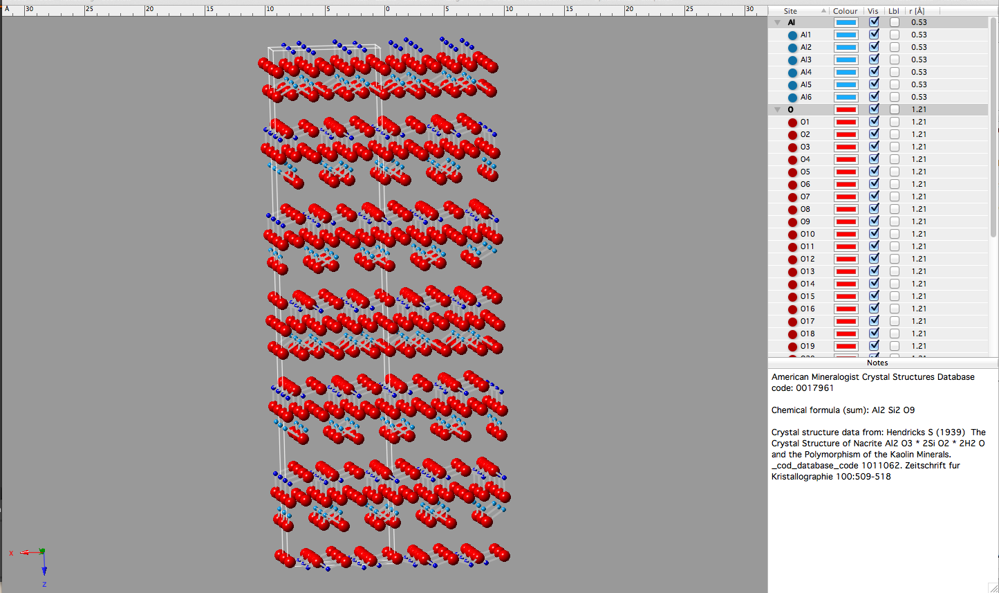

7 - Lecture
notes for Clay Mineralogy
Required
reading:
- Moore and Reynolds, 102-144
- Brindley and Brown, pages 2-144
- Newman, pages 22-128
Classification of hydrous layered silicates
1:1 Structures
Serpentine group minerals:
Most common forms are Chrysotile, Antigorite, Lizardite
- X~0
- Trioctahedral
- Mg3Si2O5(OH)4
1:1 layers common to structure of
serpentines
- Red = oxygen
- Silver = silicon
- Orange = oxygen (hydrogen attached but not shown)
- Yellow = magnesium
Clay mineral:
Chrysotile
T-O combination:
1:1
Octahedral type:
Trioctahedral
Layer charge:
0
Interlayer cation:
none
Polytype:
1M
Chemical varieties:
limited
Mixed-layering:
none described
Chrysotile occurs with a fibrous or asbestosform habit. In
the parlance of clay mineralogy the term asbestos connotes
silicates minerals that have an abestoform or fibrous habit. Other
common asbestoform minerals are the actinolite, amosite,
anthophyllite, crocidilite, riebeckite, and tremolite forms of
amphibole. Asbestoform minerals are used in commercial
applications because they have beneficial properites of high
tensile strength, resistivity to chemical attack, electrical
insulation, and high temperature stability. There is also an
emerging body of literature on the health effects of these
minerals. Reveiws of this subject can be be found in
the December 2007 issue of
Elements and
the 2006 volume 64 Reviews in
Mineralogy
Medical Mineralogy and Geochemistry.
Transmission Elecrtron Micrograph of chrysotile.
Misfit between the smaller Si-rich tetrahedral
sheet and larger Mg-rich octahedral sheet results in curl.
(Yada, K., 1971,
Acta Cryst.,
A27 659-664)
Here a reference
to give you more info about chrysolite. The Canadian
Mineralogist Vol. 36, pp. 727-739 (1998)
THE COMPOSITION OF CHRYSOTILE AND ITS RELATIONSHIP WITH
LIZARDITE
Clay mineral:
Antigorite
T-O combination:
1:1
Octahedral type:
Trioctahedral
Layer charge:
0
Interlayer cation:
none
Polytype:
1M
Chemical varieties:
Fe
Mixed-layering:
none described
Antigorite
is found
associated with talc, amphiboles, and metamorphposed dolomite.
Periodic inversion of the tetrahedra creates a macroscopically
platey minerals
(Kunze, G., 1961 Fortschr Miner. 39, 206-324)
Calculated X-ray diffraction pattern of antigorite. (Cu-radiation)
Clay mineral:
Lizardite
T-O combination:
1:1
Octahedral type:
Trioctahedral
Layer charge:
0
Interlayer cation:
none
Polytype:
2H1, 1T
Chemical varieties:
limited
Mixed-layering:
none described
Lizardite is most common of the serpentine group minerals. It
accommodates the misfit by substitution of Al for Si. This results
in a platey habit.
2H1 Polytype
1T
polytpe
Calculated X-ray diffraction patterns of Lizardite
polytypes (Cu radiation). Note polytypes are distinguished by
higher order reflections. Also be aware that mixtures of
polytypes are common in geologic samples.
Paragenesis -
- hydrothermal alteration of ultrabasic
rocks .
- dolomitic rocks associated with diabase
sill.
Kaolin group
minerals (sometimes referred to as the khandites - kaolinite - halloysite - nacrite
- dickite).
Do
not confuse the term "kaolin"
with kaolin group minerals. The term "kaolin" is a rock term
that describes a rock dominated by one of kaolin group minerals
(most oftern kaolinite.
- X~0
- Dioctahedral
- Al2Si2O5(OH)4
Clay mineral: Kaolinite
T-O combination: 1:1
Octahedral type: Dioctahedral
Layer charge: 0
Interlayer cation: none
Polytype: 1M
Chemical varieties: limited
(Fe
substitutes for Al up to a level of about 1:30)
Mixed-layering: kaolinite/smectite
The combination
of vacant and filled octahedra site in the octahedral sheet
distort the hexagonal pattern. Vacant polyhedral sites are
larger than the filled sites (i.e., Thre is no central cation to
"pull" the neighboring anions in). The resultant
fit between Octahedral sheet and Tetrahedral sheet is good.
This results in a stable structure (i.e., ~7Å 001
repeat).
Note in the figure below: The top of
octahedral sheet is composed of all hydroxyls (red-white atom
pairs). Bonding to basal oxygens of tetrahedral sheet is by
hydrogen bonding.
(Bish, D., 1993 )
Orienation of hydroxyl group is influenced by octahedral sheet
charge distribution (discussed in the following paper)
Schroeder,
P.A. 1990 Far infrared, X-ray powder
diffraction and chemical investigation of potassium micas, American Mineralogist.
v. 75, 983-991.
TEM image of kaolinite crystals. Overlay of layer-model not to
scale, but shown to demonstrate orientation of crytallographic
axes.
Clay mineral: Dickite
T-O combination: 1:1
Octahedral type: Dioctahedral
Layer charge: 0
Interlayer cation: none
Polytype: 1M
Chemical varieties: limited
Mixed-layering: na
Compositionally
similar to kaolinite but it has a two layer structure. Can be
considered as the regular alternation of right- and left-handed
kaolinite layers.
Much more well ordered than most kaolinites
(i.e., less stacking faults from layer to layer)
Clay mineral: Nacrite
T-O combination: 1:1
Octahedral type: Dioctahedral
Layer charge: 0
Interlayer cation: none
Polytype: 1M
Chemical varieties: limited
Mixed-layering: na
Compositionally similar to kaolinite and dickite but it has a
six-layer structure.

Clay mineral: Halloysite
T-O combination: 1:1
Octahedral type: Dioctahedral
Layer charge: 0
Interlayer cation: none
Polytype: 1M
Chemical varieties: limited
Mixed-layering: hydrated/dehydrated
(10Å/7Å)
forms
Think of this
mineral as a kaolinite layer with a layer of water (2.9Å)
in the interlayer space. The layer thickness is therefore,
10Å. There is also lots of disorder within and between
layers. Fe substitutes for Al in the octahedaral sheet.
Often occurs as cylinders or spheroidal shapes (due to hydrogen
bonding with water molecules).
Paragenesis - Likely a precursor phase in the formation
of kaolinite and primary residual of weathering and hydrothermal
alteration of felspars in igneous rocks
Scanning electron image of halloysite
from NW Turkey. Hydrothermal alteration of andesite.
Halloysite tubes. TEM Photo scale is
0.5 µm wide.
Halloysite spheres. TEM Photo scale is
3 µm wide.
Order/disorder in dioctahedral 1:1 structures
Hinckley Index. - The
Hinckley index is an empirical measure of crystal defect density
in kaolin group minerals. The higher the index, the lower the
defect density. There is a general positive relationship
between Fe content and defect density as suggested by the plot
below. One must be cautious with this generalization, because it
can also be seen that within the same group of samples, this trend
is actually non-existent or negative.
The H.I. for the top sample is about 0.64. The H.I. for the
bottom sample is about 1.28.
Here's another data set that covers a
wider 2-theta range of
data showing other reflections for a well-ordered and a
poorly-ordered kaolinte. Radiation source is Cu K-alpha.
Note the 001 reflections has a large FWHM (i.e., it is broader).
There is a generally good relationship between Fe content and
H.I. A close inspection of the data shows that scatter that
may be attributed to factors other than crystallographic disorder.
Ordering of isomorphous subsititution may influence mineral
properties.
Here is a
reference that offers more detail on one approach to assess
ordering of Fe in kaolinite structures.
Click
here for a small case study of
kaolinite crystallinity (unpublished)
2:1 Structures
Talc -
Pyrophyllite Group
(R2+3,
R3+2 )T4 O10 (OH)2
These are phyllosilicates with no net layer charge They are
useful to study because they serve as end-member models for
discussing structures found in other clay minerals.
Talc
- X ~ 0
- TRIOCTAHEDRAL
- Mg3 Si4O10(OH)2
Clay mineral: Talc
T-O combination: 2:1
Octahedral type: Trioctahedral
Layer charge: 0
Interlayer cation: none
Polytype: 1M
Chemical varieties: limited
Mixed-layering: na
Sheets are held
together by van der Waals bonding. Therefore giving rise to its
soft and slippery nature.
Paragenesis - Talc ---> Low-grade metamorphism of
silicous dolomite
Pyrophyllite
- X ~ 0
- DIOCTAHEDRAL
- Al2Si 4O10(OH)2
Clay mineral: Pyrophyllite
T-O combination: 2:1
Octahedral type: Dioctahedral
Layer charge: 0
Interlayer cation: none
Polytype: 1M
Chemical varieties: limited
Mixed-layering: na
Sheets are held together by van der
Waals bonding. Therefore giving rise to its soft and slippery
nature.
Paragenesis - Pyrophyllite ----> Low-grade metamorphism
of Al-rich volcanic and sed. rocks.
Structure above from Wyckoff (1969) Crystal
structures, Vol. 4, page 365
Relatively pure pyrophyllite
is greasy white to gray in color. At Graves Mountain
pyrophyllite is often found stained with red-brown hematite.
Pyrophyllite's crystal habit is displayed as unique radiating
stellated (star-like) aggregates. Individual stars range from
5 to 25 mm in diameter.
* Octahedral-Tetrahedral
Misfit - Type of sheet distortion to accommodate lateral
misfit.
Tertrahedral
rotation through ideal angles α
±30°,
i.e.,
Hexagonal (0°)
->Ditrigonal (>0° to <30°) --->Triangular
(30°). Ditrigonal symmetry can be related to the b lattice
dimension
through the trigonometric relationship cos α
= b(obs)/b(ideal) where: ideal
refrers
to the unconstrained tetrahedral sheet. Lateral reductions
typcially
range from about 1% to 13%.
Apical oxygen tilt and corregation of basal
oxygen.
{kind=link}
{kind=link}
{kind=link}
{kind=link}